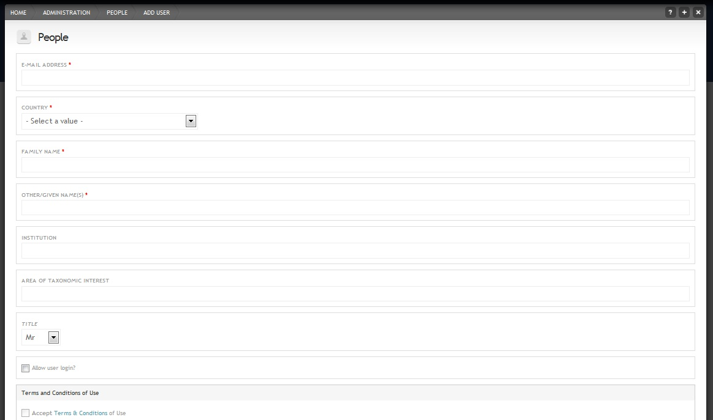

Adding & editing users¶
Introduction¶
You can control user access under People in the Admin menu. The People page allows you to list all users of your site and perform actions (upgrade, delete, edit) on them.
When a new user creates an account, the site maintainer will receive an email and will have to unblock them and add a user role before they can use the site.
There are four user `roles`_:
- Authenticated (unblocked) user: Able to access non-public content, create and edit own forum posts
- Contributor: Able to create content and edit own content
- Editor: Able to create and edit own content, and also edit other people’s content
- Maintainer: Like editor, but also has administration privileges
Instructions¶
Adding a new user¶
Go to People in the Admin menu
Click Add user at the top of the overlay
For users that are allowed to log in, you need to check the Allow user to login? box at the bottom
Complete all the relevant boxes with example data (compulsory fields are marked with a red asterix)

Authorising new user accounts¶
- Go to People in the Admin menu
- Check the status and role of the user(s) you want to edit. Newly signed up users will have a status of “blocked”
- Click the check box to the left of their username and select “Unblock the selected users” then click Update
Changing existing user roles¶
- Go to People in the Admin menu
- Check the role of the user(s) you want to edit
- Click the check box to the left of their username and add or remove the required role then click Update